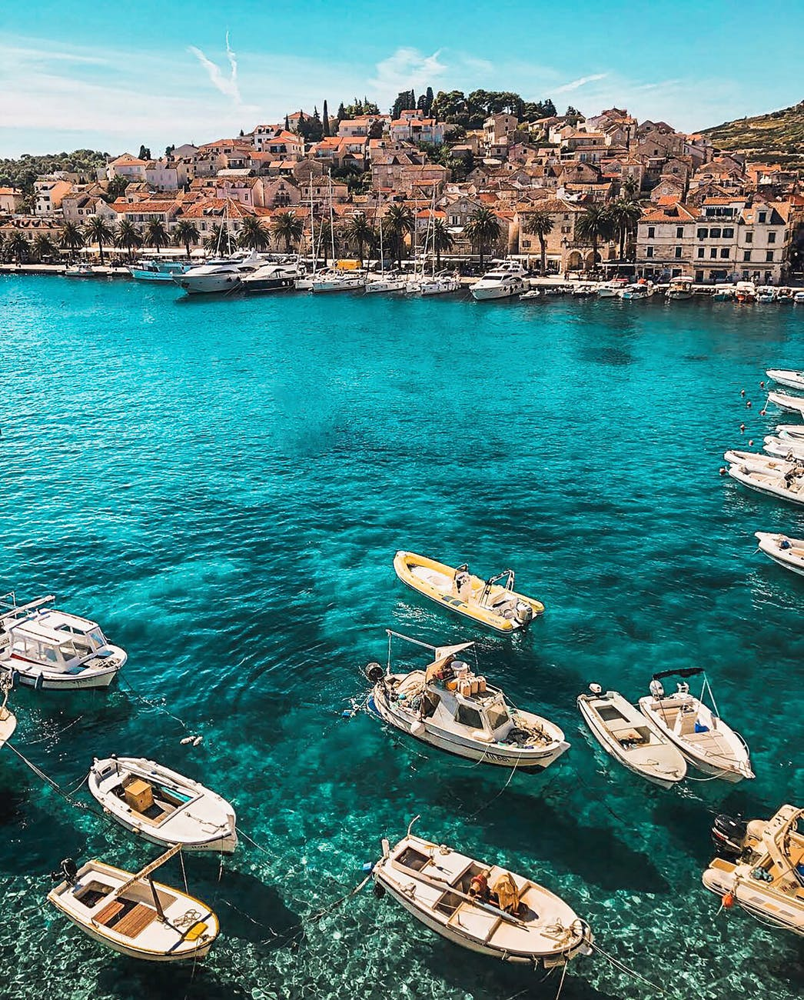

About Us
We are an organization based in Los Angeles, California and we collect images that capture water in different stages around the world. We cover water from its natural rivers running along mountains to the massive oceanic body. We like to present harmony with these images by allowing the viewer to uncover each image, this allows the user to discover the peacfulness each image has to offer while they looked through the gallery.
We are also looking for upcoming artists, so if you are a photographer or know someone, feel free to send us a message!